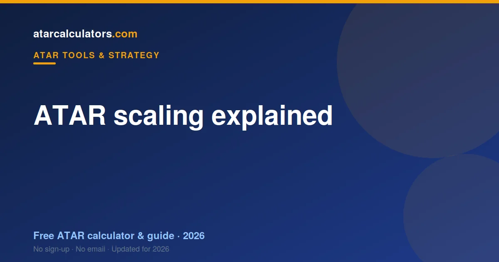

ATAR scaling adjusts each subject’s marks so students who took different subjects can be compared fairly. A subject scales up when the students taking it are strong across all their subjects, and down when its cohort is broad. So scaling reflects cohort strength, not difficulty. Every state scales its own subjects, using its own admissions centre, but the principle is the same everywhere.
Key takeaways
- Scaling lets students who took different subjects be compared fairly.
- A subject scales up when its cohort is strong across all subjects.
- Scaling reflects cohort strength, not difficulty — that is the grain of truth in “hard subjects scale up”.
- Your rank within a subject never changes — only how it counts.
- Each state scales its own subjects through its own admissions centre.
- A strong mark in any subject beats a weak mark in a high-scaling one.
- You cannot game scaling by loading up on hard subjects.

What is ATAR scaling?
Scaling is the step where your state’s admissions centre adjusts each subject so that a mark in one subject is worth the same as the same mark in another. It happens after you get your marks, on the way to your ATAR.
Without scaling, subjects would not be comparable. A mark of 85 in one subject might represent a very different level of achievement than an 85 in another. Scaling puts every subject on a common footing.
So scaling is not a bonus or a penalty aimed at you. It is a translation step that lets a single national rank, the ATAR, be built from students who all took different combinations of subjects.
Why scaling exists
Scaling exists to be fair. Students take different subjects, and some subjects attract stronger cohorts than others. Without scaling, your ATAR could depend on your subject choice as much as your ability.
Imagine two equally capable students. One takes a set of subjects with strong, competitive cohorts; the other takes broader subjects. Without scaling, the second student could end up with a higher ATAR simply because of easier competition.
Scaling removes that distortion. It means no student is better or worse off just because of the subjects they chose. That fairness is the whole reason it exists.
How scaling works
Your admissions centre looks at how the students in a subject perform across all of their subjects, not just that one. If a subject’s students tend to be strong everywhere, the subject scales up. If the group is broad, it scales down.
So scaling is worked out from the cohort, subject by subject, each year. It is not set in advance and it is not based on how hard the syllabus looks. It is based entirely on the measured strength of the students who sat the subject.
The result is a scaled mark for each of your subjects. Those scaled marks are what get combined and ranked into your ATAR, not your raw marks.
Cohort strength, not difficulty
This is the single most important idea about scaling: it reflects cohort strength, not difficulty. A subject scales up because the students taking it are strong across the board, not because the content is hard.
A subject could feel genuinely difficult and still scale modestly, if the students who take it are mixed in ability. And a subject that seems approachable can scale well if it happens to attract capable students.
So when people say a subject is “scaled”, what they really mean is that its cohort was strong. Difficulty and scaling are correlated, because hard subjects often attract strong students, but they are not the same thing.
The truth behind "hard subjects scale up"
There is a grain of truth in the saying that hard subjects scale up. The advanced maths and science subjects do tend to scale strongly. But the reason is not the difficulty itself.
These subjects scale up because they draw students who are strong across their whole program. Difficulty is a side effect: harder subjects tend to attract capable, motivated students, and it is those students who lift the scaling.
So the honest version is: subjects with strong cohorts scale up, and hard subjects often have strong cohorts. Choosing a hard subject only helps if you can be one of those strong students in it.
How much can scaling change a mark?
The effect varies by subject and by where your mark sits. In a strongly-scaling subject, a raw mark might rise several points once scaled. In a broad-entry subject, the same raw mark might fall a few points.
The shifts are usually larger near the top of the range for high-scaling subjects, and smaller in the middle. So a top mark in a strong-scaling subject can gain the most, while a middling mark moves less.
Across a whole program, these shifts add up. This is why two students with identical raw marks can end up with noticeably different ATARs, depending on which subjects they took and how those subjects scaled.
A worked example
Imagine two students, each with a raw mark of 85. One took a subject with a strong cohort; the other a broad-entry subject. After scaling, the first student’s 85 might become around 89, while the second’s becomes around 81.
Neither student’s rank within their own subject changed. The whole subject shifted: one up, one down. So the difference in their scaled marks came from the cohorts they were compared against, not from anything they did differently.
Now imagine that pattern repeated across five or six subjects. The gap between their ATARs could be significant, even though their raw marks were the same. That is scaling at work across a full program.
Your rank within a subject never changes
A common worry is that scaling might drop you below a classmate you beat. It cannot. Scaling shifts the whole subject up or down together; it never reorders students within a subject.
If you ranked above someone in a subject, you still rank above them after scaling. What scaling changes is how the whole subject compares to other subjects, not your position inside it.
So your job is simple: rank as high as you can within each subject. Scaling then handles fairness across subjects, without ever moving you relative to the people you sat the subject with.
Does every state scale the same way?
The principle is the same everywhere, but the details differ. Each state has its own admissions centre that does the scaling: UAC in NSW, VTAC in Victoria, QTAC in Queensland, and their equivalents in the other states.
Each uses its own method and publishes its own scaling figures, based on its own cohorts. So the exact scaled mark for a subject in one state does not transfer to another. What transfers is the ATAR itself, which is national.
This is why you should always use scaling information for your own state. A scaling figure quoted for one state’s subject tells you little about the same-named subject elsewhere.
Scaling and compulsory English
English is compulsory in most states, and in several it must count towards your ATAR. So scaling matters for English too. The more academic English courses tend to draw stronger cohorts and scale a little better.
But the usual rule still applies. Take the English course you can do best in. A strong mark in a standard English course can beat a weak mark in a more advanced one once scaling is applied.
See maths vs English scaling for how the two compare, since students often ask whether maths is “worth more” than English for the ATAR.
Small-cohort subjects and scaling
Small-cohort subjects, like Latin and some continuers languages, often scale very well. This is because they tend to attract small, select groups of strong students.
This does not mean you should chase a small subject purely for scaling. It means that if you have the genuine ability and interest, a strong small-cohort subject can be a real asset to your ATAR.
As always, your rank within the subject is what counts. A high scaled mark still requires you to rank near the top of that select group.
Should you choose for scaling or for marks?
For marks, almost always. Scaling only rewards your position within a subject’s cohort. If you pick a high-scaling subject you are weak in, you rank low and gain nothing from the scaling.
A strong mark in a subject you enjoy and understand beats a weak mark in a high-scaling one. Ability and motivation matter more than the scaling table, because they determine your rank, which is what scaling acts on.
We look at this directly in should I pick hard subjects for a higher ATAR. The short version: only if you can still score well in them.
Does scaling change each year?
Yes. Scaling is recalculated every year, based on that year’s cohorts. So a subject’s scaling can move a little from one year to the next, as enrolments and cohort strength shift.
The broad pattern is stable: the advanced maths and sciences, and small strong-cohort subjects, reliably sit near the top. But the exact figures change, which is why old scaling lists can mislead. See how scaling has changed over the years.
Using scaling to plan your subjects
The sensible way to use scaling is as a tiebreaker, not a starting point. Begin with your strengths: list the subjects you enjoy and perform well in. Then check how they scale.
Often, some of your strong subjects already scale reasonably. Add a high-scaling subject only if you can genuinely do well in it. And always check any prerequisites for the university courses you want, since those matter more than scaling.
Done this way, scaling supports good choices without driving them. You end up with subjects you can excel in that also scale fairly, which is the best of both.
See how any subject scales
Rather than rely on rumours, see the real effect. Our ATAR scaling calculator uses official data to show how each subject scales, from your mark to your scaled mark.
You can then estimate your overall result and compare subject combinations. Real figures beat any “which subjects scale best” rumour, and they help you plan with confidence.
Scaling and your best subjects
Scaling does not act in isolation; it works alongside the rules for which subjects count. Every state builds your ATAR from your best scaled results, whether that is your best 10 units, your best five, or an aggregate with an English component.
So a subject only helps your ATAR if its scaled mark is strong enough to make your best few. A well-scaling subject you rank poorly in may not even count, while a solid mark in a subject that scales moderately can.
The winning combination is strong marks in subjects that scale reasonably, across your best results. Scaling and your best-results rule work together to reward consistent, capable performance.
A common misconception about percentages
Students often assume a raw mark of, say, 80 means “80 percent” in a fixed sense. But once scaling is applied, that 80 becomes a scaled mark that may be higher or lower, depending on the subject’s cohort.
This is why comparing raw marks across subjects is misleading. An 80 in one subject and an 80 in another are not equivalent until they have been scaled. Scaling is precisely the step that makes them comparable.
So think in terms of scaled marks, not raw percentages, when judging how a subject contributes to your ATAR. The raw mark is only the starting point.
Scaling across a full program
The real impact of scaling shows up across a whole program, not in a single subject. Small shifts in each of five or six subjects add up, which is why two students with identical raw marks can land at noticeably different ATARs.
This is also why no single subject makes or breaks your ATAR. Your rank is built from your best results together, so consistent strength across your program matters more than any one standout or weak result.
The one-sentence summary
If you take one thing away, make it this: scaling makes subjects comparable by reflecting each subject’s cohort strength, without ever changing your rank within a subject. Perform well in subjects that suit you, and scaling handles fairness across them.
Everything else about scaling follows from that one idea. It is a fairness mechanism, not a lottery, and it rewards genuine performance rather than clever subject selection.
Common questions
What is ATAR scaling and why does it exist?
ATAR scaling adjusts each subject’s marks so students who took different subjects can be compared fairly. It exists so your ATAR reflects your ability, not just your subject choice, since some subjects attract stronger cohorts than others.
Do hard subjects always scale up?
Not always. Scaling reflects how strong a subject’s cohort is across all subjects, not how hard the content is. Hard subjects often scale up because they attract strong students, but a hard subject with a mixed cohort can scale modestly.
How much can scaling change a mark?
It varies by subject. A strongly-scaling subject can lift a raw mark by several points, while a broad-entry subject can lower it a few points. The effect is usually larger near the top of the range.
Does every state scale the same way?
The principle is the same, but each state’s admissions centre uses its own method and figures, based on its own cohorts. So scaled marks do not transfer between states, though the ATAR itself is national.